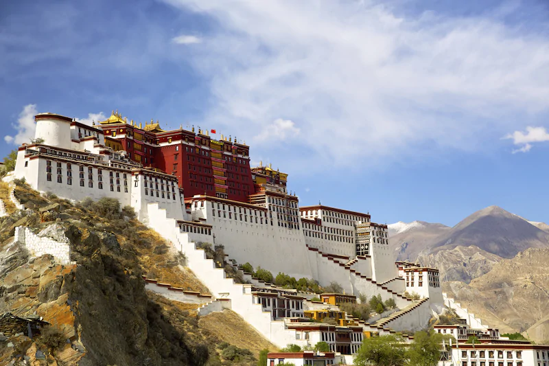
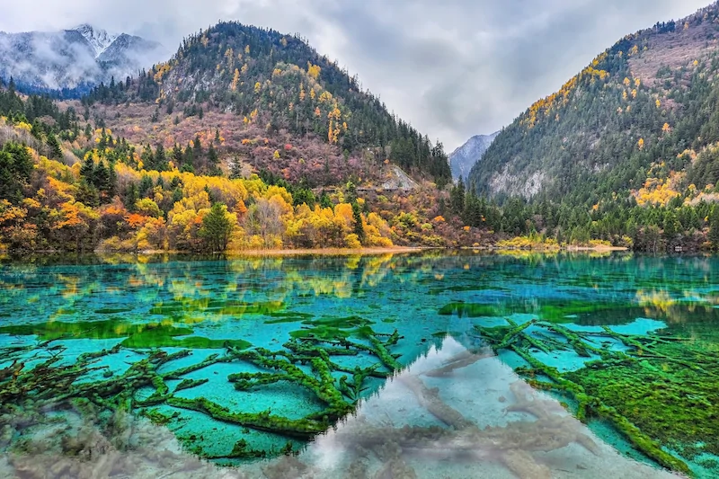
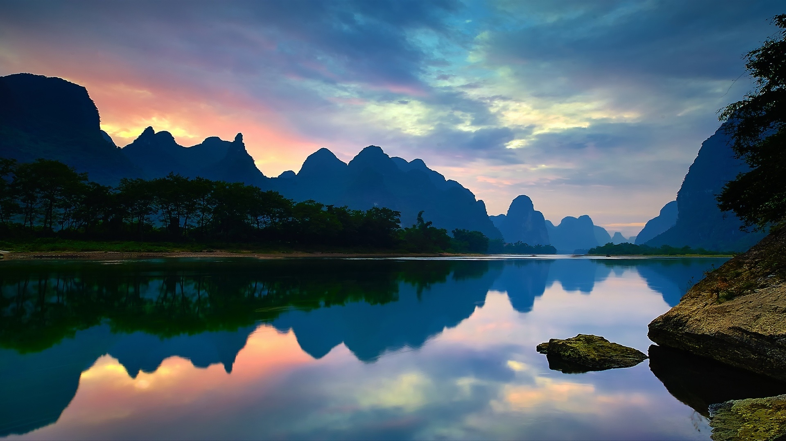
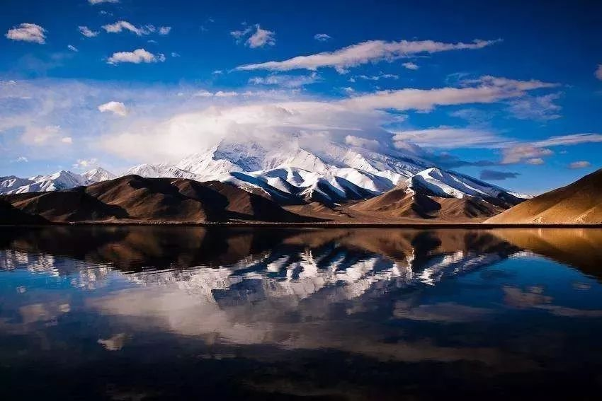

We grow in this vast territory, the towering Great Wall records the
immortal history of the Chinese nation of five thousand years; The Yangtze river and Yellow
River are the lifeblood of shenzhou children. At the top of Mount Taishan, in the desert
border area, every Chinese descendants applaud for the young republic, for the take-off. We
are very pleased that a bright future is unfolding before the eyes of the world.
The Palace Museum in Beijing was the palace of 24 Emperors of the
Ming and Qing dynasties, and is the best place to learn about
China's ancient architecture and history. As the
world's largest and most complete existing ancient
complex, its plane layout, so it is listed as the
"World Cultural Heritage" by the United Nations Scientific,
Educational and Cultural Organization.
The Great Wall, commonly known as the Great Wall, stretches 6,700
kilometers from Shanhaiguan pass in the east to Jiayuguan Pass in
the west in northern China. The Great Wall is the greatest construction project in the
history of human civilization. The
immensity of its project and the magnificence of its momentum can be
called a miracle of the world.
Potala Palace in Tibet
Potala Palace is the most important symbol of Tibet, but also the
Tibetan pilgrimage site. The Potala Palace is considered to be the
quintessence of ancient Tibetan architectural art. The red Palace
and the White House are named because they have special meanings in
color. Red represents ruling the three worlds, white silence and
yellow longevity.


Jiuzhaigou Valley, Sichuan Province
Jiuzhaigou valley is a World natural heritage site, the first nature
reserve in China whose main purpose is to protect natural scenery.
Located in Jiuzhaigou County, Aba Tibetan and Qiang Autonomous
Prefecture, Sichuan Province, it is located in the transition zone
of qinghai-Tibet Plateau, Western Sichuan Plateau and mountainous
area to Sichuan Basin.
Guangxi yangshuo
Yangshuo County belongs to Guilin City of Guangxi Zhuang Autonomous
Region. Located in the northeast of Guangxi, south of Guilin city,
there are han, Zhuang, Yao, Hui and other 11 ethnic groups. Yangshuo
is known as the "Famous Tourist county in China" for its picturesque
mountains and rivers, natural landscape and cultural landscape.


Kalakul Lake, Xinjiang
Kalakule Lake is a plateau lake, it and Bulunkule Lake in aktao
County pamir plateau, bulunkou township Mushtagg, gonger at the foot
of the ice peak, the two are only ten kilometers away from the
straight line, but the scenery of the two lakes is very different.
Karakul Lake is 220 kilometers away from Atushi, 3,600 meters
above sea level.